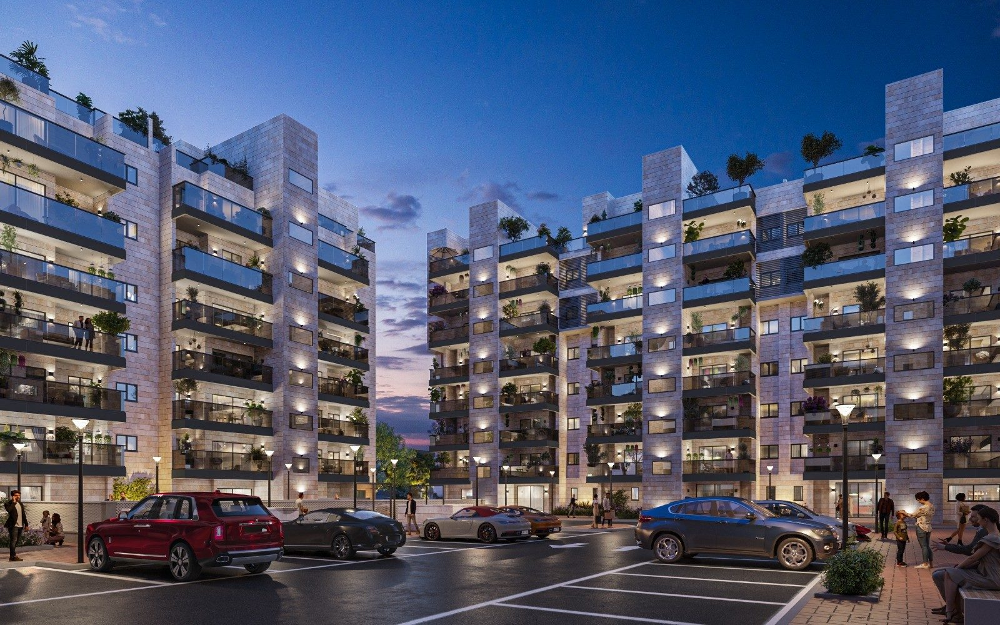

72דירות מתחדשות
72דירות חדשות
אבןחזית ירושלמית
72 דירות קיימות מפנות את מקומן ל־72 דירות חדשות ומודרניות. הפרויקט נמצא בשלבי תכנון ורישוי.
ההמשך הישיר לשלב א׳ שכבר בביצוע — קרן היסוד 17–23 באשדוד.

72 דירות קיימות מפנות את מקומן ל־72 דירות חדשות ומודרניות. הפרויקט נמצא בשלבי תכנון ורישוי.